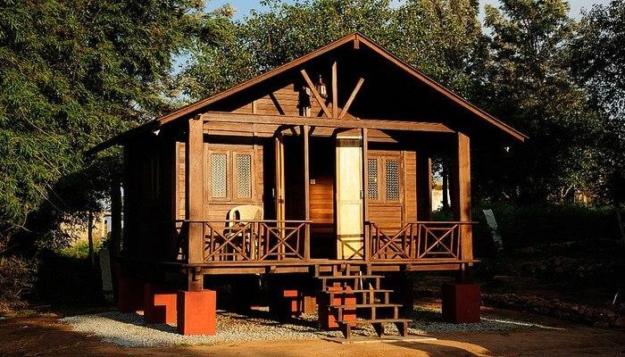

Words like growth, development, world-class infrastructure and multi-nationals have been associated with Bangalore for a long time. But, perpetually warm weather, dust, endless traffic jams, chaos and noise can also be used to describe the IT Capital of India. The bars and pubs are a popular way for many people, especially college goers and professionals, to get some much-needed relaxation. But, even their charm fades after a while, and then we start looking for alternative ways to do so. One of the ways that guarantees you all the relaxation and peace you crave for is heading to nearby destinations and most prefferably the hillstations.
1. NandiHills